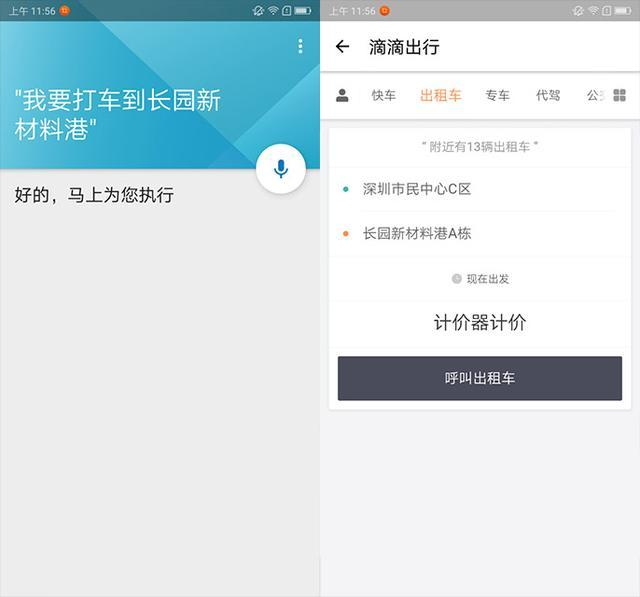

现在是互联网时代，不要说购物，就连"乞讨"都实现了"线上服务"，没有现金？不要紧，我有二维码啊！
不可否认，现在的手机带给我们太多的便捷，但这些便捷还不够，如果可以不用自己操作，让手机自己操作就更加完美了。联想手机在3月20日发布了加载超多黑科技的联想S5，这款手机可以说是千元手机内的"扛把子"了，无论是性能还是手机的外观，看起来都完全不像是千元机，在这一方面联想手机还是挺良心的。
最有趣的就是联想S5中的一项黑科技——乐语音，乐语音是可以实现用户直接与手机交流，当你告诉他一个命令，他就会按照你的指示自动去执行，不需要任何的人工手动操作。关键的是，与其他手机的语音助手最大的不同是，乐语音已经打破了应用壁垒，首次在手机上实现了跨应用操作。
这款黑科技可以说为我们的生活带来了诸多便利。我们今天就来说说，乐语音是怎样慢慢进入我们的生活的。
早上起床，想知道当天的天气怎么样，毕竟天气是非常影响一天的穿衣风格。这时我们只需要和联想S5说句：我想知道今天天气怎么样。他就会在下方把当天的温度、空气质量以及未来几天的天气情况都会一一罗列出来，并且会语音提示出来。这样一来我们便可以边刷牙洗脸，边听天气预报了，还可以节省很多时间。
当我们需要打车到一个地方，我们就不用手动操作点开应用等等烦躁的操作，只需要和联想S5说一句：我要打车到某某地点。那么手机就会自动为你打开滴滴打车APP，节会节省你更多的宝贵时间。但前提是要你手机里面下载有关打车的APP。
其实乐语音还有更多的功能，比如叫外卖、玩游戏等等，都可以通过与手机交流实现。除此之外联想S5还有另外一些黑科技也是非常的实用的，比如联想独创的"长寿电池"，拥有三重抗衰技术，相对于其他手机产品来说，电池寿命平均提升幅度高达20%。
再比如前置相机的100级AI美颜技术，此镜头还拥有拥有万能扫码功能，这个即方便又快捷。
至于联想S5还有哪些便利的功能就需要各位去真实体验了，据了解联想S5已经正式发售了，下一次的开售时间为3月30日，也就是明天，同样还是限量发售，联想S5 4GB+64GB版本仅需要1199元，要抢购的小伙伴们可要抓紧机会咯。